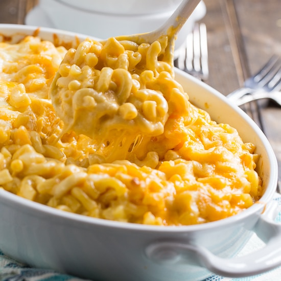
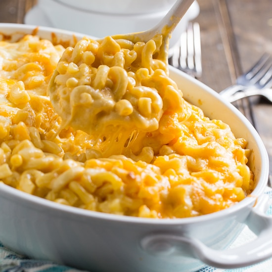

Cook macaroni according to the package directions. Drain. In a saucepan, melt butter or margarine over medium heat. Stir in enough flour to make a roux. Add milk to roux slowly, stirring constantly. Stir in cheeses, and cook over low heat until cheese is melted and the sauce is a little thick. Put macaroni in large casserole dish, and pour sauce over macaroni. Stir well. Melt butter or margarine in a skillet over medium heat. Add breadcrumbs and brown. Spread over the macaroni and cheese to cover. Sprinkle with a little paprika. Bake at 350 degrees F (175 degrees C) for 30 minutes. Serve.
 

This is the Best Mac and Cheese recipe ever! I’m not kidding. It is SO CREAMY AND SO CHEESY and so worth it. Melt in your mouth tender goodness. Like 100 fairies moonwalking on your tongue.